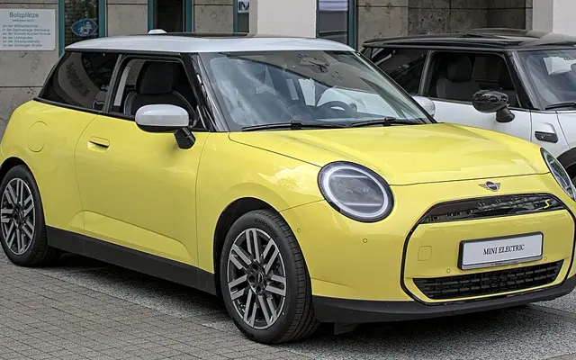

Par Motor › Precios por modelo › Mini Mini 3 y 5 puertas
Precio de segunda mano · noviembre de 2026¿Cuánto vale un Mini Mini 3 y 5 puertas de segunda mano?

Precio justo estimado de un Mini Mini 3 y 5 puertas usado en España, año por año, con los kilómetros normales para su edad y en buen estado: de 3.300 € a 33.900 €. Para tasar el tuyo con sus kilómetros reales y su estado, usa el tasador gratis.
Precios del Mini Mini 3 y 5 puertas por año
Mini R50 y R53 (2001–2006)
Precio de nuevo: One 90 CV, 15.500 € · One D 75 CV, 17.000 € · Cooper 115 CV, 18.000 €
| Año | Km normales | One 90 CV · Gasolina | One D 75 CV · Diésel | Cooper 115 CV · Gasolina |
|---|---|---|---|---|
| 2006 | 100.000 km | 4.600 € | 4.900 € | 5.300 € |
| 2005 | 100.000 km | 4.300 € | 4.600 € | 5.000 € |
| 2004 | 100.000 km | 4.000 € | 4.300 € | 4.700 € |
| 2003 | 100.000 km | 3.800 € | 4.000 € | 4.400 € |
| 2002 | 100.000 km | 3.500 € | 3.800 € | 4.100 € |
| 2001 | 100.000 km | 3.300 € | 3.500 € | 3.900 € |
Motor con muchos fallos conocidos: se estira la cadena de distribución, acumula carbonilla en las válvulas, consume aceite y falla la bomba de alta presión. Exige un historial de mantenimiento muy completo y escucha el motor en frío.
Mini R56 (2006–2014)
Precio de nuevo: One 95 CV, 17.000 € · Cooper D 110 CV, 20.500 € · Cooper 120 CV, 19.500 €
| Año | Km normales | One 95 CV · Gasolina | Cooper D 110 CV · Diésel | Cooper 120 CV · Gasolina |
|---|---|---|---|---|
| 2014 | 100.000 km | 8.400 € | 9.900 € | 9.600 € |
| 2013 | 100.000 km | 7.900 € | 9.300 € | 9.100 € |
| 2012 | 100.000 km | 7.400 € | 8.700 € | 8.500 € |
| 2011 | 100.000 km | 7.000 € | 8.200 € | 8.000 € |
| 2010 | 100.000 km | 6.500 € | 7.600 € | 7.500 € |
| 2009 | 100.000 km | 6.100 € | 7.200 € | 7.000 € |
| 2008 | 100.000 km | 5.700 € | 6.700 € | 6.600 € |
| 2007 | 100.000 km | 5.400 € | 6.300 € | 6.200 € |
| 2006 | 100.000 km | 5.000 € | 5.900 € | 5.800 € |
La cadena de distribución está en la parte trasera del motor y se desgasta o se rompe; para cambiarla hay que sacar el motor, así que la factura es alta. Un silbido o ruido de cadena con el motor en marcha es la señal. Pregunta si se cambió la cadena.
Motor con muchos fallos conocidos: se estira la cadena de distribución, acumula carbonilla en las válvulas, consume aceite y falla la bomba de alta presión. Exige un historial de mantenimiento muy completo y escucha el motor en frío.
Mini F56 y F55 (2014–2023)
Precio de nuevo: One 102 CV, 20.000 € · Cooper D 116 CV, 24.000 € · Cooper SE eléctrico 184 CV, 34.000 €
| Año | Km normales | One 102 CV · Gasolina | Cooper D 116 CV · Diésel | Cooper SE eléctrico 184 CV · Eléctrico |
|---|---|---|---|---|
| 2023 | 50.000 km | 15.600 € | 18.000 € | 22.500 € |
| 2022 | 65.000 km | 14.600 € | 15.500 € | 21.100 € |
| 2021 | 80.000 km | 13.100 € | 14.300 € | 19.000 € |
| 2020 | 95.000 km | 11.500 € | 14.300 € | 16.700 € |
| 2019 | 100.000 km | 10.900 € | 14.300 € | 15.800 € |
| 2018 | 100.000 km | 10.800 € | 14.200 € | 15.500 € |
| 2017 | 100.000 km | 10.500 € | 14.000 € | 15.200 € |
| 2016 | 100.000 km | 10.300 € | 13.200 € | 14.900 € |
| 2015 | 100.000 km | 10.100 € | 12.400 € | 14.600 € |
| 2014 | 100.000 km | 9.900 € | 11.600 € | 14.200 € |
La cadena de distribución está en la parte trasera del motor y se desgasta o se rompe; para cambiarla hay que sacar el motor, así que la factura es alta. Un silbido o ruido de cadena con el motor en marcha es la señal. Pregunta si se cambió la cadena.
Mini J01 y F66 (2024–hoy)
Precio de nuevo: Cooper C 156 CV, 28.000 € · Cooper E eléctrico 184 CV, 32.000 € · Cooper S 204 CV, 33.000 €
| Año | Km normales | Cooper C 156 CV · Gasolina | Cooper E eléctrico 184 CV · Eléctrico | Cooper S 204 CV · Gasolina |
|---|---|---|---|---|
| 2026 | 5.000 km | 28.700 € | 27.900 € | 33.900 € |
| 2025 | 20.000 km | 24.800 € | 24.100 € | 29.300 € |
| 2024 | 35.000 km | 23.300 € | 22.600 € | 27.400 € |
Kilómetros normales: 15.000 al año en gasolina, híbridos y eléctricos, y 20.000 en diésel, con un máximo de 100.000 km (por encima no tasamos: el precio depende demasiado del historial de cada coche). Cifras redondeadas a 100 €.
Preguntas frecuentes
¿Cuánto vale un Mini Mini 3 y 5 puertas de segunda mano?
Según el año, la versión y los kilómetros, un Mini Mini 3 y 5 puertas usado vale hoy de 3.300 € a 33.900 € en España. El más barato de nuestra tabla es un One de 2001 (3.300 €) y el más caro un Cooper S de 2026 (33.900 €). Son precios justos estimados entre particulares y profesionales, con los kilómetros normales para su edad y en buen estado.
¿Qué motorizaciones tiene el Mini Mini 3 y 5 puertas?
En nuestra base de datos hay versiones gasolina, diésel y eléctrico, en 4 generaciónes: Mini R50 y R53, Mini R56, Mini F56 y F55 y Mini J01 y F66.
¿Qué motores del Mini Mini 3 y 5 puertas dan problemas?
Ojo con el 1.6 THP / Mini Cooper S (motor Prince) (Cooper S, Cooper S Works, John Cooper Works GP, 2006–2012) y el BMW 2.0 diésel N47 (cadena de distribución) (Cooper D, One D, Cooper SD, 2011–2014): son motores con fallos graves y muy extendidos. Antes de comprar uno, pide el historial de mantenimiento y comprueba si ya se hizo la reparación. El resto de motores no tiene problemas fuera de lo normal.
¿Cómo sé si me piden demasiado por un Mini Mini 3 y 5 puertas?
Abre el tasador de Par Motor, elige el Mini Mini 3 y 5 puertas, el año y los kilómetros reales, y escribe lo que te piden. Te diremos si está por debajo del precio justo (chollo) o por encima (caro). Es gratis y no pide registro ni matrícula.
Otros Mini
Compara su coste real
El precio de compra es solo una parte. Mira cuánto te costaría al mes con combustible, seguro, neumáticos, mantenimiento y lo que pierde de valor.
Abrir el comparador →